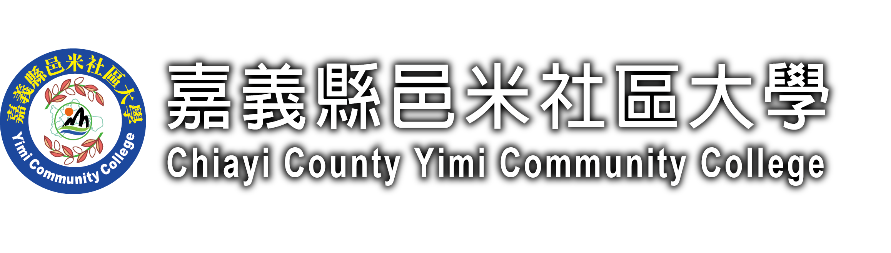

中埔校本部
連絡電話：05-2390519
地址：嘉義縣中埔鄉和興路91號（和興國小）
服務時間：週一至週五 09:00-17:00（國定假日休息）

課程資料載入中...
YiMi Community College
依區域、星期與時段快速找到適合的課程，課程目標、材料費與每週大綱都能一次看清楚。
Course Search
輸入課名、講師、地點或課程編號，就能快速找到課程。
Before Registration
即日起至額滿為止。
四送一優惠（第五門免費）：報名繳費四門當期課程（共 8 學分）可再享一門課程（2 學分）免費，但不得退課、退費或延期保留。
已成班：報名費不予退費及轉讓，僅依退費標準表退還學分費。
| 上課週數 | 第一週提出申請 至第二週前 |
第二週提出申請 至第三週前 |
第三週提出申請 至第四週前 |
第四週提出申請 至第五週前 |
第五週提出申請 至第六週前 |
|---|---|---|---|---|---|
| 18 週 | 全退 | 全退 | 退 7 成 | 退 6 成 | 不退費 |
| 非 18 週 | 全退 | 退 7 成 | 退 6 成 | 不退費 | 不退費 |
匯款完成後請來電或私訊邑米社大（LINE ID：0905935899），提供帳號末 5 碼、匯款金額及匯款時間。
所有費用依實際狀況及開課公告為準，敬請學員留意各期正式通知。
Choose Area
Area Courses
Weekly Plan
Before Registration
Contact
連絡電話：05-2390519
地址：嘉義縣中埔鄉和興路91號（和興國小）
服務時間：週一至週五 09:00-17:00（國定假日休息）
連絡電話：05-3790898
地址：嘉義縣朴子市山通路7號B1（嘉義縣立圖書館）
服務時間：週二至週五 09:00-17:00（週一及國定假日休息）